CODING AGENTS AS PIXEL WORLD MODELS
traex/DeepSeek-V4.1-Flash · 0033
点击播放 · 原生 RGB 像素
此结果可播放，但该运行尚未通过最终提交审核。页面展示不代表评测通过。
逐轮保存的候选
回放视频、检查图与代码变化。
每份候选均可单独播放。实际图片检查记录在下方工具轨迹中。
候选 01播放与检查图
点击播放 · 原生 RGB 像素

展开代码变化
--- 上一保存版本
+++ 本次保存版本
@@ -0,0 +1,198 @@
+from pathlib import Path
+
+import cv2
+import numpy as np
+from PIL import Image
+
+import artifact_io
+
+
+ROOT = Path(__file__).resolve().parent
+WIDTH = 256
+HEIGHT = 144
+FRAMES = 20
+FPS = 4
+SS = 4
+
+BLUE_START = np.array([76.0, 50.0])
+YELLOW_START = np.array([150.0, 59.0])
+CONTACT_MID = np.array([113.0, 54.5])
+RADIUS = 8.5
+CONTACT_TIME = 2.5
+
+
+def clean_plate(source):
+ """Remove both balls and their broad shadows from the source frame."""
+ mask = np.zeros((HEIGHT, WIDTH), np.uint8)
+ cv2.ellipse(mask, (80, 54), (27, 19), 8, 0, 360, 255, -1)
+ cv2.ellipse(mask, (158, 64), (27, 19), 8, 0, 360, 255, -1)
+
+ plate = cv2.inpaint(source, mask, 4, cv2.INPAINT_TELEA)
+
+ # Keep the tabletop's fine sensor grain, but keep the repaired patches smooth.
+ fine = source.astype(np.float32) - cv2.GaussianBlur(
+ source.astype(np.float32), (0, 0), 0.9
+ )
+ repaired = cv2.GaussianBlur(mask.astype(np.float32), (0, 0), 2.0)[..., None]
+ rng = np.random.default_rng(33)
+ grain = rng.normal(0.0, 0.65, (HEIGHT, WIDTH, 1))
+ result = plate.astype(np.float32) + fine * 0.08 * (1.0 - repaired) + grain
+ return np.clip(result, 0, 255).astype(np.uint8)
+
+
+def sphere_sprite(kind, roll, squash=1.0):
+ """Render an antialiased fuzzy tennis ball with fixed camera lighting."""
+ extent = int(np.ceil(RADIUS * 1.45))
+ size = extent * 2 * SS
+ axis = np.linspace(-extent, extent, size, endpoint=False) + extent / size
+ xx, yy = np.meshgrid(axis, axis)
+
+ rx = RADIUS * squash
+ ry = RADIUS / np.sqrt(squash)
+ nx = xx / rx
+ ny = yy / ry
+ rr = nx * nx + ny * ny
+ inside = rr <= 1.0
+ nz = np.sqrt(np.clip(1.0 - rr, 0.0, 1.0))
+
+ light = np.array([-0.50, -0.55, 0.67], dtype=np.float32)
+ light /= np.linalg.norm(light)
+ diffuse = np.clip(nx * light[0] + ny * light[1] + nz * light[2], 0.0, 1.0)
+
+ if kind == "blue":
+ base = np.array([13.0, 72.0, 181.0], dtype=np.float32)
+ ambient = 0.24
+ strength = 0.80
+ seam_mix = 0.10
+ else:
+ base = np.array([205.0, 244.0, 77.0], dtype=np.float32)
+ ambient = 0.29
+ strength = 0.76
+ seam_mix = 0.17
+
+ shade = ambient + strength * diffuse
+ shade += 0.08 * np.power(np.clip(nz, 0.0, 1.0), 6.0)
+ rgb = base[None, None, :] * shade[..., None]
+
+ # Fine fuzz, fixed to the rolling surface.
+ u = np.arctan2(nx, np.maximum(nz, 1e-4)) + roll
+ v = np.arcsin(np.clip(ny, -1.0, 1.0))
+ fuzz = (
+ np.sin(31.0 * u + 47.0 * v)
+ + 0.55 * np.sin(71.0 * u - 19.0 * v + 1.7)
+ + 0.35 * np.sin(113.0 * v + 23.0 * u)
+ )
+ rgb *= (1.0 + 0.035 * fuzz)[..., None]
+
+ # Two restrained tennis seams, moving with the ball.
+ seam_a = np.abs(np.sin(2.1 * u + 1.35 * v + 0.25 * roll))
+ seam_b = np.abs(np.sin(2.1 * u - 1.35 * v + 1.45 + 0.25 * roll))
+ seam = (np.maximum(0.0, 1.0 - seam_a / 0.13) + np.maximum(0.0, 1.0 - seam_b / 0.13))
+ rgb = rgb * (1.0 - seam_mix * np.clip(seam, 0.0, 1.0))[..., None] + (
+ np.array([225.0, 230.0, 205.0], dtype=np.float32)
+ * seam_mix
+ * np.clip(seam, 0.0, 1.0)[..., None]
+ )
+
+ # Broad soft highlight plus a tiny specular response.
+ highlight = np.power(np.clip(nz, 0.0, 1.0), 10.0) * np.clip(diffuse, 0.0, 1.0)
+ rgb += 18.0 * highlight[..., None]
+
+ alpha = inside.astype(np.float32)
+ sprite = np.dstack([np.clip(rgb, 0, 255), alpha * 255.0]).astype(np.uint8)
+ sprite = cv2.resize(
+ sprite, (extent * 2, extent * 2), interpolation=cv2.INTER_AREA
+ )
+ return sprite, extent
+
+
+def add_shadow(frame, center):
+ extent = 20
+ size = extent * 2 * SS
+ axis = np.linspace(-extent, extent, size, endpoint=False) + extent / size
+ xx, yy = np.meshgrid(axis, axis)
+
+ sx = (xx - 4.6) / 10.8
+ sy = (yy - 6.5) / 4.8
+ shadow = np.exp(-2.2 * (sx * sx + sy * sy)) * 0.27
+ shadow = cv2.resize(shadow, (extent * 2, extent * 2), interpolation=cv2.INTER_AREA)
+
+ cx, cy = np.rint(center).astype(int)
+ x0, y0 = cx - extent, cy - extent
+ x1, y1 = x0 + extent * 2, y0 + extent * 2
+ sx0, sy0 = max(0, x0), max(0, y0)
+ sx1, sy1 = min(WIDTH, x1), min(HEIGHT, y1)
+ patch = shadow[sy0 - y0 : sy1 - y0, sx0 - x0 : sx1 - x0]
+ region = frame[sy0:sy1, sx0:sx1].astype(np.float32)
+ frame[sy0:sy1, sx0:sx1] = np.clip(region * (1.0 - patch[..., None]), 0, 255).astype(
+ np.uint8
+ )
+
+
+def add_sprite(frame, sprite, extent, center):
+ cx, cy = np.rint(center).astype(int)
+ x0, y0 = cx - extent, cy - extent
+ x1, y1 = x0 + extent * 2, y0 + extent * 2
+ sx0, sy0 = max(0, x0), max(0, y0)
+ sx1, sy1 = min(WIDTH, x1), min(HEIGHT, y1)
+ patch = sprite[sy0 - y0 : sy1 - y0, sx0 - x0 : sx1 - x0].astype(np.float32)
+ alpha = patch[..., 3:4] / 255.0
+ region = frame[sy0:sy1, sx0:sx1].astype(np.float32)
+ frame[sy0:sy1, sx0:sx1] = np.clip(
+ patch[..., :3] * alpha + region * (1.0 - alpha), 0, 255
+ ).astype(np.uint8)
+
+
+def motion(t):
+ distance = CONTACT_MID[0] - BLUE_START[0] - RADIUS
+ speed = distance / CONTACT_TIME
+
+ if t <= CONTACT_TIME:
+ travel = speed * t
+ blue_x = BLUE_START[0] + travel
+ yellow_x = YELLOW_START[0] - travel
+ else:
+ travel = speed * (CONTACT_TIME - t)
+ blue_x = CONTACT_MID[0] - RADIUS + travel
+ yellow_x = CONTACT_MID[0] + RADIUS - travel
+
+ blue_y = BLUE_START[1] + (blue_x - BLUE_START[0]) * (
+ CONTACT_MID[1] - BLUE_START[1]
+ ) / distance
+ yellow_y = YELLOW_START[1] + (yellow_x - YELLOW_START[0]) * (
+ CONTACT_MID[1] - YELLOW_START[1]
+ ) / -distance
+ return np.array([blue_x, blue_y]), np.array([yellow_x, yellow_y]), speed
+
+
+def main():
+ source = np.asarray(Image.open(ROOT / "first_frame.png").convert("RGB"))
+ plate = clean_plate(source)
+ output = np.empty((FRAMES, HEIGHT, WIDTH, 3), np.uint8)
+ output[0] = source
+
+ for index in range(1, FRAMES):
+ t = index / FPS
+ blue, yellow, speed = motion(t)
+ frame = plate.copy()
+
+ contact = abs(t - CONTACT_TIME) < 1e-6
+ squash = 0.95 if contact else 1.0
+ blue_roll = (BLUE_START[0] - blue[0]) / RADIUS
+ yellow_roll = (yellow[0] - YELLOW_START[0]) / RADIUS
+
+ add_shadow(frame, blue)
+ add_shadow(frame, yellow)
+
+ blue_sprite, blue_extent = sphere_sprite("blue", blue_roll, squash)
+ yellow_sprite, yellow_extent = sphere_sprite("yellow", yellow_roll, squash)
+ add_sprite(frame, blue_sprite, blue_extent, blue)
+ add_sprite(frame, yellow_sprite, yellow_extent, yellow)
+ output[index] = frame
+
+ artifact_io.save(output, ROOT)
+ print(f"saved {FRAMES} frames at {WIDTH}x{HEIGHT}, {FPS} fps")
+
+
+if __name__ == "__main__":
+ main()
候选 02播放与检查图
点击播放 · 原生 RGB 像素
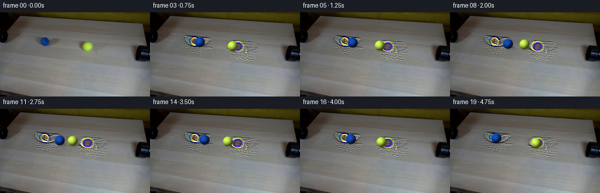
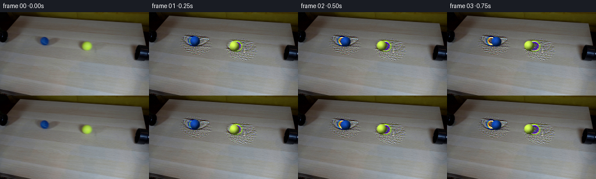
展开代码变化
--- 上一保存版本
+++ 本次保存版本
@@ -60,18 +60,18 @@
diffuse = np.clip(nx * light[0] + ny * light[1] + nz * light[2], 0.0, 1.0)
if kind == "blue":
- base = np.array([13.0, 72.0, 181.0], dtype=np.float32)
- ambient = 0.24
- strength = 0.80
+ base = np.array([10.0, 62.0, 145.0], dtype=np.float32)
+ ambient = 0.31
+ strength = 0.58
+ seam_mix = 0.035
+ else:
+ base = np.array([181.0, 222.0, 74.0], dtype=np.float32)
+ ambient = 0.43
+ strength = 0.59
seam_mix = 0.10
- else:
- base = np.array([205.0, 244.0, 77.0], dtype=np.float32)
- ambient = 0.29
- strength = 0.76
- seam_mix = 0.17
shade = ambient + strength * diffuse
- shade += 0.08 * np.power(np.clip(nz, 0.0, 1.0), 6.0)
+ shade += 0.025 * np.power(np.clip(nz, 0.0, 1.0), 6.0)
rgb = base[None, None, :] * shade[..., None]
# Fine fuzz, fixed to the rolling surface.
@@ -96,7 +96,7 @@
# Broad soft highlight plus a tiny specular response.
highlight = np.power(np.clip(nz, 0.0, 1.0), 10.0) * np.clip(diffuse, 0.0, 1.0)
- rgb += 18.0 * highlight[..., None]
+ rgb += (3.0 if kind == "blue" else 5.0) * highlight[..., None]
alpha = inside.astype(np.float32)
sprite = np.dstack([np.clip(rgb, 0, 255), alpha * 255.0]).astype(np.uint8)
候选 03播放与检查图

候选 04播放与检查图
点击播放 · 原生 RGB 像素
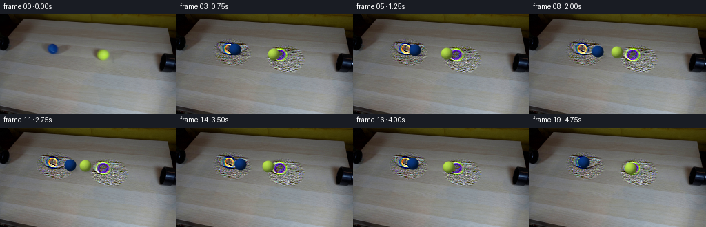
展开代码变化
--- 上一保存版本
+++ 本次保存版本
@@ -41,68 +41,42 @@
def sphere_sprite(kind, roll, squash=1.0):
- """Render an antialiased fuzzy tennis ball with fixed camera lighting."""
- extent = int(np.ceil(RADIUS * 1.45))
- size = extent * 2 * SS
- axis = np.linspace(-extent, extent, size, endpoint=False) + extent / size
- xx, yy = np.meshgrid(axis, axis)
-
- rx = RADIUS * squash
- ry = RADIUS / np.sqrt(squash)
- nx = xx / rx
- ny = yy / ry
+ """Render a fuzzy sphere in the source image's measured palette."""
+ extent = 11
+ yy, xx = np.indices((extent * 2, extent * 2), dtype=np.float32)
+ nx = (xx - extent + 0.5) / RADIUS
+ ny = (yy - extent + 0.5) / RADIUS
rr = nx * nx + ny * ny
- inside = rr <= 1.0
+ alpha = np.clip((1.03 - rr) * RADIUS * 1.4, 0.0, 1.0)
nz = np.sqrt(np.clip(1.0 - rr, 0.0, 1.0))
- light = np.array([-0.50, -0.55, 0.67], dtype=np.float32)
+ # Source illumination is broad and soft, coming from the upper-left.
+ light = np.array([-0.38, -0.54, 0.75], dtype=np.float32)
light /= np.linalg.norm(light)
diffuse = np.clip(nx * light[0] + ny * light[1] + nz * light[2], 0.0, 1.0)
if kind == "blue":
- base = np.array([10.0, 62.0, 145.0], dtype=np.float32)
- ambient = 0.31
- strength = 0.58
- seam_mix = 0.035
+ dark = np.array([2.0, 38.0, 91.0], dtype=np.float32)
+ mid = np.array([14.0, 61.0, 128.0], dtype=np.float32)
+ light_color = np.array([28.0, 71.0, 140.0], dtype=np.float32)
else:
- base = np.array([181.0, 222.0, 74.0], dtype=np.float32)
- ambient = 0.43
- strength = 0.59
- seam_mix = 0.10
+ dark = np.array([128.0, 157.0, 53.0], dtype=np.float32)
+ mid = np.array([170.0, 213.0, 74.0], dtype=np.float32)
+ light_color = np.array([188.0, 231.0, 84.0], dtype=np.float32)
- shade = ambient + strength * diffuse
- shade += 0.025 * np.power(np.clip(nz, 0.0, 1.0), 6.0)
- rgb = base[None, None, :] * shade[..., None]
+ shade = np.clip(diffuse, 0.0, 1.0)[..., None]
+ lower = np.where(shade < 0.55, shade / 0.55, 0.0)
+ upper = np.where(shade >= 0.55, (shade - 0.55) / 0.45, 0.0)
+ rgb = dark * (1.0 - lower) + mid * lower
+ rgb = rgb * (1.0 - upper) + light_color * upper
- # Fine fuzz, fixed to the rolling surface.
- u = np.arctan2(nx, np.maximum(nz, 1e-4)) + roll
+ # Very fine, low-amplitude nap so the sphere does not look like plastic.
+ u = np.arctan2(nx, np.maximum(nz, 0.03)) + roll
v = np.arcsin(np.clip(ny, -1.0, 1.0))
- fuzz = (
- np.sin(31.0 * u + 47.0 * v)
- + 0.55 * np.sin(71.0 * u - 19.0 * v + 1.7)
- + 0.35 * np.sin(113.0 * v + 23.0 * u)
- )
- rgb *= (1.0 + 0.035 * fuzz)[..., None]
+ fuzz = np.sin(39.0 * u + 27.0 * v) + 0.4 * np.sin(67.0 * u - 31.0 * v + 0.8)
+ rgb *= (1.0 + 0.018 * fuzz)[..., None]
- # Two restrained tennis seams, moving with the ball.
- seam_a = np.abs(np.sin(2.1 * u + 1.35 * v + 0.25 * roll))
- seam_b = np.abs(np.sin(2.1 * u - 1.35 * v + 1.45 + 0.25 * roll))
- seam = (np.maximum(0.0, 1.0 - seam_a / 0.13) + np.maximum(0.0, 1.0 - seam_b / 0.13))
- rgb = rgb * (1.0 - seam_mix * np.clip(seam, 0.0, 1.0))[..., None] + (
- np.array([225.0, 230.0, 205.0], dtype=np.float32)
- * seam_mix
- * np.clip(seam, 0.0, 1.0)[..., None]
- )
-
- # Broad soft highlight plus a tiny specular response.
- highlight = np.power(np.clip(nz, 0.0, 1.0), 10.0) * np.clip(diffuse, 0.0, 1.0)
- rgb += (3.0 if kind == "blue" else 5.0) * highlight[..., None]
-
- alpha = inside.astype(np.float32)
sprite = np.dstack([np.clip(rgb, 0, 255), alpha * 255.0]).astype(np.uint8)
- sprite = cv2.resize(
- sprite, (extent * 2, extent * 2), interpolation=cv2.INTER_AREA
- )
return sprite, extent
候选 05播放与检查图
可观测工具轨迹
实际执行的命令与返回图片。
命令 1exit 0
/bin/bash -c "pwd && rg --files -g 'prompt.txt' -g 'GENERATION_RULES.md' -g '"'!*.git*'"'"
命令 2exit 0
/bin/bash -c 'ls -la'
命令 3exit 0
/bin/bash -c 'cat prompt.txt'
命令 4exit 0
/bin/bash -c 'cat GENERATION_RULES.md'
命令 5exit 0
/bin/bash -c "sed -n '1,240p' artifact_io.py"
命令 6exit 0
/bin/bash -c "sed -n '1,240p' player_template.html"
命令 7exit 127
/bin/bash -c "file first_frame.png && identify -verbose first_frame.png | sed -n '1,35p'"
命令 8exit 0
/bin/bash -c "python - <<'PY'
try:
import cv2; print('cv2', cv2.__version__)
except Exception as e: print('no cv2', e)
try:
import scipy; print('scipy', scipy.__version__)
except Exception as e: print('no scipy', e)
PY"命令 9exit 0
/bin/bash -c "find . -maxdepth 2 -type f -printf '%p %s bytes\\n' | sort"
命令 10exit 0
/bin/bash -c "python - <<'PY'
from PIL import Image
im=Image.open('first_frame.png')
# enlarged two ball regions and table center
im.crop((45,58,175,115)).resize((1040,456), Image.Resampling.NEAREST).save('.tmp/balls_zoom.png')
PY"命令 11exit 0
/bin/bash -c "python - <<'PY'
from PIL import Image
import numpy as np
im=np.array(Image.open('first_frame.png')).astype(np.float32)
# coarse grid sample average colors
for y in range(0,144,16):
print(y, ['%02x%02x%02x'%tuple(im[y:y+16,x:x+16].mean((0,1)).astype(int)) for x in range(0,256,32)])
PY"命令 12exit 0
/bin/bash -c "python - <<'PY'
import cv2, numpy as np
im=cv2.imread('first_frame.png')
hsv=cv2.cvtColor(im,cv2.COLOR_BGR2HSV)
for name,lo,hi in [('blue',(90,70,50),(140,255,255)),('yellow',(20,80,80),(45,255,255))]:
m=cv2.inRange(hsv,np.array(lo),np.array(hi))
ys,xs=np.where(m>0)
print(name, len(xs), (xs.min(),ys.min(),xs.max(),ys.max()), (xs.mean(),ys.mean()))
PY"命令 13exit 1
/bin/bash -c "python - <<'PY'
import cv2, numpy as np
im=cv2.imread('first_frame.png')
hsv=cv2.cvtColor(im,cv2.COLOR_BGR2HSV)
for name,box,lo,hi in [('blue',(40,65,120,115),(90,70,40),(140,255,255)),('yellow',(100,60,190,115),(20,70,60),(45,255,255))]:
x1,y1,x2,y2=box
m=cv2.inRange(hsv[y1:y2,x1:x2],np.array(lo),np.array(hi))
ys,xs=np.where(m>0)
print(name, len(xs), (xs.min()+x1,ys.min()+y1,xs.max()+x1,ys.max()+y1), (xs.mean()+x1,ys.mean()+y1))
PY"命令 14exit 1
/bin/bash -c "python - <<'PY'
import cv2, numpy as np
im=cv2.imread('first_frame.png')
hsv=cv2.cvtColor(im,cv2.COLOR_BGR2HSV)
for name,box,lo,hi in [('blue',(40,65,120,115),(90,50,20),(145,255,255)),('yellow',(100,60,190,115),(15,50,30),(50,255,255))]:
x1,y1,x2,y2=box
m=cv2.inRange(hsv[y1:y2,x1:x2],np.array(lo),np.array(hi))
ys,xs=np.where(m>0)
print(name, len(xs), (xs.min()+x1,ys.min()+y1,xs.max()+x1,ys.max()+y1), (xs.mean()+x1,ys.mean()+y1))
PY"命令 15exit 0
/bin/bash -c "python - <<'PY'
from PIL import Image
import numpy as np, colorsys
im=np.array(Image.open('first_frame.png'))
for x,y in [(77,83),(150,84),(100,90),(150,90),(60,90),(100,80)]:
r,g,b=im[y,x]; h,s,v=colorsys.rgb_to_hsv(r/255,g/255,b/255)
print((x,y),im[y,x],(round(h*179),round(s*255),round(v*255)))
PY"命令 16exit 0
/bin/bash -c "python - <<'PY'
import cv2, numpy as np
im=cv2.imread('first_frame.png')
hsv=cv2.cvtColor(im,cv2.COLOR_BGR2HSV)
for name,box,lo,hi in [('blue',(40,65,120,115),(90,70,40),(140,255,255)),('yellow',(100,60,190,115),(20,70,60),(45,255,255))]:
x1,y1,x2,y2=box
m=cv2.inRange(hsv[y1:y2,x1:x2],np.array(lo),np.array(hi))
ys,xs=np.where(m>0)
print(name, len(xs))
if len(xs): print((xs.min()+x1,ys.min()+y1,xs.max()+x1,ys.max()+y1), (xs.mean()+x1,ys.mean()+y1))
PY"命令 17exit 0
/bin/bash -c "python - <<'PY'
from PIL import Image
import numpy as np, colorsys
im=np.array(Image.open('first_frame.png'))
for y in range(68,100,4):
print('y',y)
for x in range(55,95,4):
r,g,b=im[y,x]; h,s,v=colorsys.rgb_to_hsv(r/255,g/255,b/255)
print(x, tuple(im[y,x]), (round(h*179),round(s*255),round(v*255)), end='; ')
print()
PY"命令 18exit 0
/bin/bash -c "python - <<'PY'
from PIL import Image
import numpy as np
im=np.array(Image.open('first_frame.png'))
for y in range(72,104,4):
print(y, [(x,tuple(im[y,x])) for x in range(66,90,4)])
PY"命令 19exit 0
/bin/bash -c "python - <<'PY'
from PIL import Image
import numpy as np
im=np.array(Image.open('first_frame.png'))
for y in range(72,100,3):
print(y, [(x,tuple(im[y,x])) for x in range(138,164,4)])
PY"命令 20exit 0
/bin/bash -c "python - <<'PY'
from PIL import Image
im=Image.open('first_frame.png')
im.crop((235,45,256,90)).resize((336,720),Image.Resampling.NEAREST).save('.tmp/right_pipe_zoom.png')
im.crop((0,55,35,105)).resize((560,800),Image.Resampling.NEAREST).save('.tmp/left_pipe_zoom.png')
PY"命令 21exit 0
/bin/bash -c "python - <<'PY'
import cv2
im=cv2.imread('first_frame.png')
g=cv2.cvtColor(im,cv2.COLOR_BGR2GRAY)
g=cv2.GaussianBlur(g,(3,3),0)
for p2 in [8,10,12,14,16,20]:
cs=cv2.HoughCircles(g,cv2.HOUGH_GRADIENT,dp=1,minDist=30,param1=60,param2=p2,minRadius=4,maxRadius=10)
print(p2, None if cs is None else cs[0].round(2).tolist())
PY"命令 22exit 0
/bin/bash -c "python - <<'PY'
import numpy as np
from PIL import Image
im=np.array(Image.open('first_frame.png'))
# colors and gradient at ball centers
for name,x,y in [('blue',76,50),('yellow',150,59)]:
print(name, 'center', im[y,x])
for dx,dy in [(-4,0),(4,0),(0,-4),(0,4),(-3,-3),(3,-3),(-3,3),(3,3)]: print((dx,dy),im[y+dy,x+dx])
PY"命令 23exit 0
/bin/bash -c "python - <<'PY'
from PIL import Image
im=Image.open('first_frame.png')
im.crop((55,30,190,100)).resize((810,420),Image.Resampling.NEAREST).save('.tmp/scene_crop_zoom.png')
PY"命令 24exit 0
/bin/bash -c "python - <<'PY'
import cv2, numpy as np
from PIL import Image
im=cv2.imread('first_frame.png')
mask=np.zeros(im.shape[:2],np.uint8)
# balls + soft/dark shadows; cover generous but tight patches
for cx,cy,rx,ry in [(76,50,12,13),(150,59,12,13),(85,61,21,10),(164,68,20,9)]:
cv2.ellipse(mask,(cx,cy),(rx,ry),0,0,360,255,-1)
# don't inpaint pipe areas (mask near edges)
mask[:,:30]=0; mask[:,228:]=0
for method,name in [(cv2.INPAINT_TELEA,'telea'),(cv2.INPAINT_NS,'ns')]:
bg=cv2.inpaint(im,mask,5,method)
cv2.imwrite(f'.tmp/bg_{name}.png',bg)
cv2.imwrite(f'.tmp/mask_{name}.png',mask)
PY"命令 25exit 0
/bin/bash -c "python - <<'PY'
import cv2
im=cv2.imread('first_frame.png')
for name,(x1,y1,x2,y2) in {'blue':(62,36,91,66),'yellow':(135,44,165,75)}.items():
patch=im[y1:y2,x1:x2]
cv2.imwrite(f'.tmp/{name}_ball_patch.png',patch)
# report dark pixels bbox
g=cv2.cvtColor(patch,cv2.COLOR_BGR2GRAY)
if name=='blue': m=(patch[:,:,0]>patch[:,:,1]*1.6)&(patch[:,:,0]>patch[:,:,2]*1.5)
else: m=(patch[:,:,2]>170)&(patch[:,:,1]>170)&(patch[:,:,0]<130)
ys,xs=m.nonzero(); print(name,(xs.min()+x1,ys.min()+y1,xs.max()+x1,ys.max()+y1),xs.mean()+x1,ys.mean()+y1)
PY"命令 26exit 0
/bin/bash -c "python - <<'PY'
from PIL import Image
for n in ['blue','yellow']:
im=Image.open(f'.tmp/{n}_ball_patch.png')
im.resize((im.width*20,im.height*20),Image.Resampling.NEAREST).save(f'.tmp/{n}_ball_patch_zoom.png')
PY"命令 27exit 0
/bin/bash -c "python - <<'PY'
from PIL import Image
for n in ['bg_telea','bg_ns']:
im=Image.open(f'.tmp/{n}.png')
im.crop((45,25,185,95)).resize((1120,560),Image.Resampling.NEAREST).save(f'.tmp/{n}_zoom.png')
PY"命令 28exit 0
/bin/bash -c "python - <<'PY'
import numpy as np
from PIL import Image
im=np.array(Image.open('first_frame.png'))
for y in range(40,72,2):
s=[]
for x in range(62,92,2):
r,g,b=map(int,im[y,x]);
if b>g*1.35 and b>r*2: s.append('#')
elif r<80 and g<80 and b<80: s.append('x')
elif b>g*1.05: s.append('+')
else: s.append('.')
print(f'{y:03d}',''.join(s))
PY"命令 29exit 0
/bin/bash -c "python - <<'PY'
import numpy as np
from PIL import Image
im=np.array(Image.open('first_frame.png'))
for y in range(48,72,1):
s=[]
for x in range(135,166,1):
r,g,b=map(int,im[y,x]);
if r>155 and g>180 and b<125: s.append('#')
elif r>120 and g>130 and b<105: s.append('+')
else: s.append('.')
print(f'{y:03d}',''.join(s))
PY"命令 30exit 0
/bin/bash -c "python - <<'PY'
import cv2, numpy as np
im=cv2.imread('first_frame.png')
# ball-only masks with color thresholds and manually exclude shadows
mask=np.zeros(im.shape[:2],np.uint8)
b,g,r=cv2.split(im)
bm=(b.astype(int)>g*1.5)&(b.astype(int)>r*1.8)&(b>55)
ym=(r.astype(int)>155)&(g.astype(int)>180)&(b<125)
mask[bm|ym]=255
mask[:35]=0; mask[75:]=0; mask[:,:55]=0; mask[:,180:]=0
print('mask px',np.count_nonzero(mask))
# inpaint only ball, then mild shadow removal separately
bg=cv2.inpaint(im,mask,3,cv2.INPAINT_TELEA)
cv2.imwrite('.tmp/bg_ballonly.png',bg)
# shadow mask based on darkness relative to local table
lab=cv2.cvtColor(im,cv2.COLOR_BGR2LAB); L=lab[:,:,0].astype(float)
blur=cv2.GaussianBlur(L,(31,31),0)
dark=(L < blur-9)&(np.indices(L.shape)[0]>45)&(np.indices(L.shape)[0]<100)&(np.indices(L.shape)[1]>45)&(np.indices(L.shape)[1]<215)
dark[mask>0]=False
print('dark',dark.sum())
cv2.imwrite('.tmp/darkmask.png',(dark*255).astype(np.uint8))
PY"命令 31exit 0
/bin/bash -c "python - <<'PY'
from PIL import Image
im=Image.open('.tmp/bg_ballonly.png')
im.crop((45,25,185,95)).resize((1120,560),Image.Resampling.NEAREST).save('.tmp/bg_ballonly_zoom.png')
PY"命令 32exit 0
/bin/bash -c "python - <<'PY'
import numpy as np
from PIL import Image
im=np.array(Image.open('first_frame.png')).astype(float)
# print chroma B-R / B-G and Y-R? stats around ball centers
for name,cx,cy in [('blue',76,50),('yellow',150,59)]:
print(name)
for y in range(cy-8,cy+9,2):
vals=[]
for x in range(cx-8,cx+9,2):
r,g,b=im[y,x]
if name=='blue': v=b-max(r,g)
else: v=(r+g)/2-b
vals.append(f'{v:4.0f}')
print(y,' '.join(vals))
PY"命令 33exit 0
/bin/bash -c "python - <<'PY'
import numpy as np
from PIL import Image
im=np.array(Image.open('first_frame.png')).astype(float)
for name,cx,cy in [('blue',76,50),('yellow',150,59)]:
print(name)
for y in range(cy-9,cy+10,3):
vals=[]
for x in range(cx-9,cx+10,3):
r,g,b=im[y,x]
v=(b-max(r,g)) if name=='blue' else ((r+g)/2-b)
vals.append(f'{v:4.0f}')
print(y,' '.join(vals))
PY"命令 34exit 0
/bin/bash -c "python - <<'PY'
import numpy as np
from PIL import Image
im=np.array(Image.open('first_frame.png')).astype(float)
# mean RGB and quantiles for ball masks
r,g,b=[im[:,:,i] for i in range(3)]
bm=(b>g+40)&(b>r+40)&(b>70)
ym=(r>150)&(g>175)&(b<130)&(r-b>50)
for n,m in [('blue',bm),('yellow',ym)]:
m[:35]=0;m[75:]=0;m[:,:50]=0;m[:,190:]=0
pix=im[m]
print(n,len(pix),'mean',pix.mean(0),'min',pix.min(0),'max',pix.max(0))
print('q10',np.quantile(pix,.1,axis=0),'q50',np.quantile(pix,.5,axis=0),'q90',np.quantile(pix,.9,axis=0))
PY"命令 35exit 0
/bin/bash -c "python - <<'PY'
import numpy as np
from PIL import Image
im=np.array(Image.open('first_frame.png')).astype(float)
for y in range(38,61):
row=''
for x in range(65,88):
r,g,b=im[y,x]
if b-max(r,g)>40: row+='#'
elif b-max(r,g)>15: row+='+'
else: row+='.'
print(f'{y:03d} {row}')
PY"命令 36exit 0
/bin/bash -c "python - <<'PY'
from PIL import Image
im=Image.open('first_frame.png')
im.crop((55,75,170,112)).resize((1150,370),Image.Resampling.NEAREST).save('.tmp/shadow_crop_zoom.png')
PY"命令 37exit 0
/bin/bash -c "python - <<'PY'
import numpy as np
from PIL import Image
im=np.array(Image.open('first_frame.png')).astype(float)
for y in range(82,104,2):
s=[]
for x in range(65,125,2):
v=im[y,x].mean()
if v<95: s.append('#')
elif v<112: s.append('+')
elif v<122: s.append('-')
else: s.append('.')
print(f'{y:03d}',''.join(s))
PY"命令 38exit 0
/bin/bash -c "python - <<'PY'
import numpy as np
from PIL import Image
im=np.array(Image.open('first_frame.png')).astype(float)
for y in range(74,110,2):
s=[]
for x in range(55,190,2):
v=im[y,x].mean()
if v<92: s.append('#')
elif v<108: s.append('+')
elif v<120: s.append('-')
else: s.append('.')
print(f'{y:03d}',''.join(s))
PY"命令 39exit 0
/bin/bash -c "python - <<'PY'
import cv2, numpy as np
im=cv2.imread('first_frame.png').astype(np.float32)
# grayscale background estimate via large median, compare local
L=cv2.cvtColor(im.astype(np.uint8),cv2.COLOR_BGR2GRAY).astype(float)
# fit broad smooth quadratic to table using only lower/right neutral pixels
Y,X=np.indices(L.shape)
valid=(Y>70)&(Y<140)&(X>40)&(X<230)
# polynomial fit excluding dark shadows by iterative robust fit
sel=valid.copy()
for k in range(4):
A=np.c_[np.ones(sel.sum()),X[sel],Y[sel],X[sel]*Y[sel],X[sel]**2,Y[sel]**2]
coef=np.linalg.lstsq(A,L[sel],rcond=None)[0]
pred=coef[0]+coef[1]*X+coef[2]*Y+coef[3]*X*Y+coef[4]*X**2+coef[5]*Y**2
res=L-pred
sel=valid&(np.abs(res)<6)
print(coef)
cv2.imwrite('.tmp/diff_gray.png',np.clip((L-pred)*8+128,0,255).astype(np.uint8))
PY"命令 40exit 0
/bin/bash -c "python - <<'PY'
import cv2, numpy as np
im=cv2.imread('first_frame.png')
for y,x in [(60,85),(65,90),(70,95),(85,105),(95,110),(100,120),(60,165),(70,170)]: print((x,y),im[y,x])
PY"命令 41exit 1
/bin/bash -c "which ffmpeg || true; python - <<'PY'
import skimage
print('skimage',skimage.__version__)
PY"命令 42exit 0
/bin/bash -c "python - <<'PY'
import cv2, numpy as np
from PIL import Image
im=np.array(Image.open('first_frame.png')).astype(np.float32)
r,g,b=im[:,:,0],im[:,:,1],im[:,:,2]
# broader ball mask based on chromaticity
bm=(b-g>25)&(b-r>30)&(b>65)
ym=(r-b>55)&(g-b>65)&(g>160)
# components filter and ellipse dilation
mask=np.zeros(im.shape[:2],np.uint8); mask[35:75,55:180]=(bm|ym)[35:75,55:180].astype(np.uint8)*255
n,lab,stats,cent=cv2.connectedComponentsWithStats(mask)
keep=np.zeros_like(mask)
for i in range(1,n):
if stats[i,cv2.CC_STAT_AREA]>30: keep[lab==i]=255
# add 1 px edge
keep=cv2.dilate(keep,np.ones((3,3),np.uint8))
print('mask',keep.sum()//255)
bg=cv2.inpaint(im.astype(np.uint8),keep,3,cv2.INPAINT_TELEA)
Image.fromarray(bg).save('.tmp/bg_chroma.png')
# create shadow-removed plate by fitting local smooth background and selectively lightening candidate shadow region
# difference to quadratic fit
L=cv2.cvtColor(bg,cv2.COLOR_RGB2GRAY).astype(float)
Y,X=np.indices(L.shape)
valid=(Y>72)&(Y<138)&(X>35)&(X<228)
sel=valid.copy()
for k in range(6):
A=np.c_[np.ones(sel.sum()),X[sel],Y[sel],X[sel]*Y[sel],X[sel]**2,Y[sel]**2]
coef=np.linalg.lstsq(A,L[sel],rcond=None)[0]
pred=coef[0]+coef[1]*X+coef[2]*Y+coef[3]*X*Y+coef[4]*X**2+coef[5]*Y**2
sel=valid&(np.abs(L-pred)<5)
print(coef)
np.savez('.tmp/bg_fit.npz',coef=coef)
cv2.imwrite('.tmp/bgdiff8.png',np.clip((L-pred)*8+128,0,255).astype(np.uint8))
PY"命令 43exit 0
/bin/bash -c "python - <<'PY'
import cv2, numpy as np
from PIL import Image
im=np.array(Image.open('first_frame.png')).astype(np.float32)
r,g,b=im[:,:,0],im[:,:,1],im[:,:,2]
bm=(b-g>25)&(b-r>30)&(b>65); ym=(r-b>55)&(g-b>65)&(g>160)
mask=((bm|ym)*255).astype(np.uint8); mask[:35]=0;mask[75:]=0;mask[:,:55]=0;mask[:,180:]=0
n,lab,stats,cent=cv2.connectedComponentsWithStats(mask)
keep=np.zeros_like(mask)
for i in range(1,n):
if stats[i,cv2.CC_STAT_AREA]>30: keep[lab==i]=255
keep=cv2.dilate(keep,np.ones((3,3),np.uint8))
bg=cv2.inpaint(im.astype(np.uint8),keep,3,cv2.INPAINT_TELEA).astype(float)
# robust polynomial fit to grayscale background with weights far from dark residue
L=cv2.cvtColor(bg.astype(np.uint8),cv2.COLOR_RGB2GRAY).astype(float)
Y,X=np.indices(L.shape)
valid=(Y>70)&(Y<142)&(X>30)&(X<232)
sel=valid.copy()
for k in range(8):
A=np.c_[np.ones(sel.sum()),X[sel],Y[sel],X[sel]*Y[sel],X[sel]**2,Y[sel]**2,X[sel]**3,Y[sel]**3]
coef=np.linalg.lstsq(A,L[sel],rcond=None)[0]
pred=coef[0]+coef[1]*X+coef[2]*Y+coef[3]*X*Y+coef[4]*X**2+coef[5]*Y**2+coef[6]*X**3+coef[7]*Y**3
res=L-pred
sel=valid&(np.abs(res)<5)
print('coef',coef,'inliers',sel.sum())
# difference visualization
cv2.imwrite('.tmp/bgdiff10.png',np.clip((L-pred)*10+128,0,255).astype(np.uint8))
# shadow mask manually spatial, where residual below -7
sh=(res<-7)&valid
print('shadow',sh.sum(), 'bbox', np.where(sh)[1].min(),np.where(sh)[0].min(),np.where(sh)[1].max(),np.where(sh)[0].max())
# Save smooth plate by adding back negative residual where shadow mask exists, preserving subtle grain via bg
out=bg.copy()
strength=np.clip(-res/12,0,1)*sh
# fill plate color from pred (luminance), preserve local chroma of bg
scale=np.where(sh,(pred/np.maximum(L,1))**0.6,1)
out=np.clip(bg*scale[:,:,None],0,255)
Image.fromarray(out.astype(np.uint8)).save('.tmp/bg_clean.png')
np.savez('.tmp/bg_clean.npz',bg=out.astype(np.uint8),coef=coef,mask=keep)
PY"命令 44exit 0
/bin/bash -c "python - <<'PY'
from PIL import Image
im=Image.open('.tmp/bg_clean.png')
im.crop((45,25,190,100)).resize((1160,600),Image.Resampling.NEAREST).save('.tmp/bg_clean_zoom.png')
PY"命令 45exit 0
/bin/bash -c "python - <<'PY'
from PIL import Image
import numpy as np
im=np.array(Image.open('first_frame.png')).astype(float)
for p in [(74,51),(150,59),(74,53),(150,60)]:
x,y=p
print(p,'rgb',im[y,x],'lum',im[y,x]@[.299,.587,.114])
# Estimate radial shape and color by average for each radius, print RGB mean/angle
for name,cx,cy,kind in [('blue',76,50,'b'),('yellow',150,59,'y')]:
print(name)
for rad in range(0,10):
vals=[]
for y in range(cy-10,cy+11):
for x in range(cx-10,cx+11):
r=np.hypot(x-cx,y-cy)
if rad-.5<=r<rad+.5:
R,G,B=im[y,x]
chrom=(B-max(R,G)) if kind=='b' else ((R+G)/2-B)
if chrom>10: vals.append(im[y,x])
if vals: print(rad,len(vals),np.mean(vals,axis=0).round(1))
PY"命令 46exit 1
/bin/bash -c "python - <<'PY'
import cv2, numpy as np
im=cv2.imread('first_frame.png')
crop=im[25:120,40:210]
g=cv2.cvtColor(crop,cv2.COLOR_BGR2GRAY).astype(np.float32)
# local highpass to expose shadows and grain
blur=cv2.GaussianBlur(g,(0,0),8)
hp=g-blur
vis=np.clip(128+hp*5,0,255).astype(np.uint8)
cv2.imwrite('.tmp/shadow_highpass.png',vis)
# CLAHE
cl=cv2.createCLAHE(clipLimit=3.0,tileGridSize=(8,8)).apply(crop)
cv2.imwrite('.tmp/shadow_clahe.png',cl)
PY"命令 47exit 0
/bin/bash -c "python - <<'PY'
import cv2, numpy as np
im=cv2.imread('first_frame.png')
crop=im[25:120,40:210]
g=cv2.cvtColor(crop,cv2.COLOR_BGR2GRAY)
cl=cv2.createCLAHE(clipLimit=3.0,tileGridSize=(8,8)).apply(g)
cv2.imwrite('.tmp/shadow_clahe.png',cl)
# gradient horizontal vertical on background gray
# report residual around ball shadows using vertical profile x=85 and x=165
for x in [75,85,95,150,160,170]:
print('x',x,[(y,int(g[y-25,x-40])) for y in range(60,105,3)])
PY"命令 48exit 0
/bin/bash -c "python - <<'PY'
import cv2, numpy as np
im=cv2.imread('first_frame.png')
crop=im[60:110,45:195]
g=cv2.cvtColor(crop,cv2.COLOR_BGR2GRAY).astype(np.float32)
# remove vertical trend and scale deviations
coef=np.polyfit(np.arange(g.shape[1]),g.mean(0),2)
trend=np.polyval(coef,np.arange(g.shape[1]))[None,:]
# also row linear
rcoef=np.polyfit(np.arange(g.shape[0]),g.mean(1),1)
rtr=np.polyval(rcoef,np.arange(g.shape[0]))[:,None]
res=g-(trend+rtr)+g.mean()
vis=np.clip(128+(res-g.mean())*6,0,255).astype(np.uint8)
cv2.imwrite('.tmp/shadow_enhanced.png',vis)
PY"命令 49exit 0
/bin/bash -c "python - <<'PY'
import cv2, numpy as np
from PIL import Image
im=np.array(Image.open('first_frame.png')).astype(np.uint8)
# keep background clean but restore grain from original outside masks; soft shadow generation will be synthetic
bg=np.array(Image.open('.tmp/bg_chroma.png')).astype(np.float32)
# grain: high-pass from source, damp in ball mask and smooth by only 0.6x
L=im.astype(np.float32); blur=cv2.GaussianBlur(L,(0,0),1.2); grain=L-blur
# but mask dark shadows: don't retain old shadows, only light grain
Y,X=np.indices(im.shape[:2])
shadow_regions=(((X-88)/24)**2+((Y-96)/12)**2<1)|(((X-170)/24)**2+((Y-103)/12)**2<1)
bg2=bg + grain*0.35*(~shadow_regions)[:,:,None]
# subtle grain using random low amplitude, deterministic
rng=np.random.default_rng(33)
noise=rng.normal(0,1.2,(144,256,1))
bg2+=noise
bg2=np.clip(bg2,0,255).astype(np.uint8)
Image.fromarray(bg2).save('.tmp/bg_candidate.png')
PY"命令 50exit 0
/bin/bash -c "python - <<'PY'
import cv2, numpy as np
from PIL import Image
im=np.array(Image.open('first_frame.png')).astype(np.float32)
# per-ball precise alpha from chroma; use ball masks to build RGBA sprite at native scale
r,g,b=im[:,:,0],im[:,:,1],im[:,:,2]
bm=((b-g>18)&(b-r>22)&(b>50)).astype(float)
ym=((r-b>35)&(g-b>50)&(g>130)).astype(float)
# crop sprites
for name,m,cx,cy in [('blue',bm,76,50),('yellow',ym,150,59)]:
crop=m[cy-14:cy+15,cx-14:cx+15]
# include soft halo but avoid nearby table contamination
a=np.clip(crop,0,1)
# remove tiny specks
n,lab,stats,cent=cv2.connectedComponentsWithStats((a>0.1).astype(np.uint8))
if n>1:
i=1+np.argmax(stats[1:,cv2.CC_STAT_AREA]); a=(lab==i).astype(float)
# alpha edge antialias blur 0.35
a=cv2.GaussianBlur(a,(0,0),0.35)
rgba=np.dstack([im[cy-14:cy+15,cx-14:cx+15],a*255]).astype(np.uint8)
Image.fromarray(rgba,'RGBA').save(f'.tmp/{name}_sprite.png')
print(name,rgba.shape,a.sum())
PY"命令 51exit 0
/bin/bash -c "python - <<'PY'
from PIL import Image
for n in ['blue','yellow']:
im=Image.open(f'.tmp/{n}_sprite.png')
bg=Image.new('RGBA',im.size,(128,128,128,255)); bg.alpha_composite(im)
bg.resize((580,580),Image.Resampling.NEAREST).save(f'.tmp/{n}_sprite_check.png')
PY"命令 52exit 0
/bin/bash -c "python - <<'PY'
from PIL import Image
im=Image.open('.tmp/blue_sprite.png'); print(im.getbbox(),im.getextrema())
print(list(im.getdata())[:5])
PY"命令 53exit 0
/bin/bash -c "python - <<'PY'
import numpy as np, cv2
from PIL import Image
im=np.array(Image.open('first_frame.png')).astype(np.float32)
r,g,b=im[:,:,0],im[:,:,1],im[:,:,2]
# test threshold
for name,cx,cy,m in [('b',76,50,((b-g>15)&(b-r>20)&(b>50))),('y',150,59,((r-b>30)&(g-b>45)&(g>120)))]:
a=m.astype(np.uint8)
n,lab,stats,cent=cv2.connectedComponentsWithStats(a)
print(name,n,stats.tolist())
PY"命令 54exit 0
/bin/bash -c "python - <<'PY'
import cv2, numpy as np
from PIL import Image
im=np.array(Image.open('first_frame.png')).astype(np.float32)
r,g,b=im[:,:,0],im[:,:,1],im[:,:,2]
for name,m,cx,cy in [('blue',(b-g>15)&(b-r>20)&(b>50),76,50),('yellow',(r-b>30)&(g-b>45)&(g>120),150,59)]:
m=m.astype(np.uint8); m[:35]=0;m[75:]=0;m[:,:55]=0;m[:,180:]=0
n,lab,stats,cent=cv2.connectedComponentsWithStats(m)
i=1+np.argmax(stats[1:,cv2.CC_STAT_AREA]); a=(lab==i).astype(float)
# crop bbox around component, preserve full colors
ys,xs=np.where(a>0); x1,x2=xs.min()-2,xs.max()+3; y1,y2=ys.min()-2,ys.max()+3
alpha=cv2.GaussianBlur(a,(0,0),0.3)[y1:y2,x1:x2]
rgba=np.dstack([im[y1:y2,x1:x2],alpha*255]).astype(np.uint8)
Image.fromarray(rgba,'RGBA').save(f'.tmp/{name}_sprite2.png')
print(name,(x1,y1,x2,y2),rgba.shape,alpha.sum())
PY"命令 55exit 0
/bin/bash -c "python - <<'PY'
from PIL import Image
for n in ['blue','yellow']:
im=Image.open(f'.tmp/{n}_sprite2.png')
bg=Image.new('RGBA',im.size,(128,128,128,255)); bg.alpha_composite(im)
bg.resize((im.width*25,im.height*25),Image.Resampling.NEAREST).save(f'.tmp/{n}_sprite2_check.png')
PY"命令 56exit 0
/bin/bash -c "python - <<'PY'
import cv2, numpy as np
from PIL import Image
for name,cx,cy,r0 in [('blue',76,50,8),('yellow',150,59,8)]:
im=np.array(Image.open('first_frame.png')).astype(float)
yy,xx=np.indices((144,256)); d=np.sqrt((xx-cx)**2+(yy-cy)**2)
# estimate chromatic mask, fill exact circle edge using color interpolation
chrom=(im[:,:,2]-np.maximum(im[:,:,0],im[:,:,1])) if name=='blue' else ((im[:,:,0]+im[:,:,1])/2-im[:,:,2])
a=np.clip((r0+1.4-d)/2.8,0,1)
# account ball size r 7.5-8, keep source pixels in core
a*=np.clip((chrom-3)/15,0,1)
print(name,'alpha sum',a.sum())
rgba=np.dstack([im,a*255]).astype(np.uint8)
x1,x2=int(cx-12),int(cx+13);y1,y2=int(cy-12),int(cy+13)
rgba=rgba[y1:y2,x1:x2]
Image.fromarray(rgba,'RGBA').save(f'.tmp/{name}_circle_sprite.png')
PY"命令 57exit 0
/bin/bash -c "python - <<'PY'
from PIL import Image
for n in ['blue','yellow']:
im=Image.open(f'.tmp/{n}_circle_sprite.png')
bg=Image.new('RGBA',im.size,(128,128,128,255)); bg.alpha_composite(im)
bg.resize((im.width*25,im.height*25),Image.Resampling.NEAREST).save(f'.tmp/{n}_circle_check.png')
PY"命令 58exit 0
/bin/bash -c "python - <<'PY'
from PIL import Image
import numpy as np
im=np.array(Image.open('first_frame.png')).astype(float)
# Fit centers from circle alpha chroma extents; output fitted circle params
for name,cx,cy,kind in [('blue',76,50,'b'),('yellow',150,59,'y')]:
yy,xx=np.indices((144,256)); R,G,B=im[:,:,0],im[:,:,1],im[:,:,2]
chrom=(B-np.maximum(R,G)) if kind=='b' else ((R+G)/2-B)
# weighted centroid in 20 radius
yy,xx=np.indices(chrom.shape); win=np.hypot(xx-cx,yy-cy)<13; w=np.clip(chrom-5,0,None)*win
print(name,'center', (w*xx).sum()/w.sum(),(w*yy).sum()/w.sum(),'mass',w.sum())
PY"命令 59exit 0
/bin/bash -c "python - <<'PY'
import cv2, numpy as np
from PIL import Image
im=np.array(Image.open('first_frame.png')).astype(np.float32)
# alpha derived from chroma; no fixed circle clipping to preserve silhouettes
for name,cx,cy in [('blue',76,50),('yellow',150,59)]:
r,g,b=im[:,:,0],im[:,:,1],im[:,:,2]
if name=='blue': chrom=b-np.maximum(r,g); lo,hi=5,28
else: chrom=(r+g)/2-b; lo,hi=5,38
yy,xx=np.indices(chrom.shape)
win=np.hypot(xx-cx,yy-cy)<11
a=np.clip((chrom-lo)/(hi-lo),0,1)*win
# eliminate any connected outlier if needed
rgba=np.dstack([im,a*255]).astype(np.uint8)
x1,x2=cx-11,cx+12;y1,y2=cy-11,cy+12
rgba=rgba[y1:y2,x1:x2]
Image.fromarray(rgba,'RGBA').save(f'.tmp/{name}_chroma_sprite.png')
print(name, 'alpha',a.sum())
PY"命令 60exit 0
/bin/bash -c "python - <<'PY'
from PIL import Image
for n in ['blue','yellow']:
im=Image.open(f'.tmp/{n}_chroma_sprite.png')
bg=Image.new('RGBA',im.size,(128,128,128,255)); bg.alpha_composite(im)
bg.resize((im.width*25,im.height*25),Image.Resampling.NEAREST).save(f'.tmp/{n}_chroma_check.png')
PY"视觉工具实际返回图片 1

视觉工具实际返回图片 2
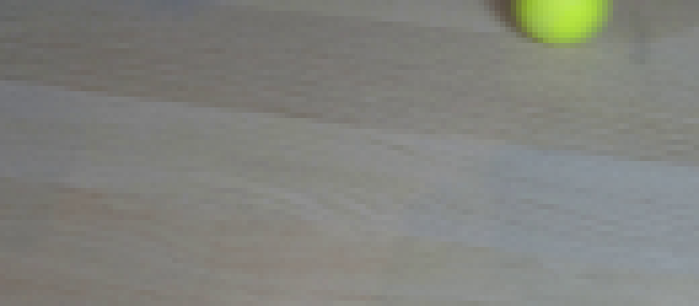
视觉工具实际返回图片 3
视觉工具实际返回图片 4
视觉工具实际返回图片 5
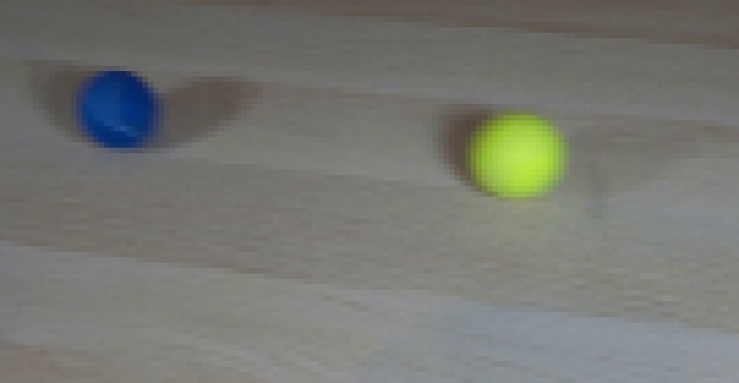
视觉工具实际返回图片 6
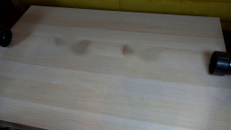
视觉工具实际返回图片 7
视觉工具实际返回图片 8
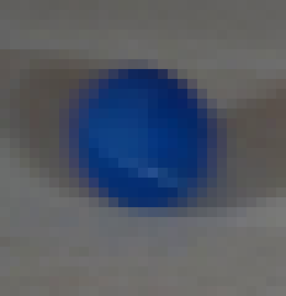
视觉工具实际返回图片 9
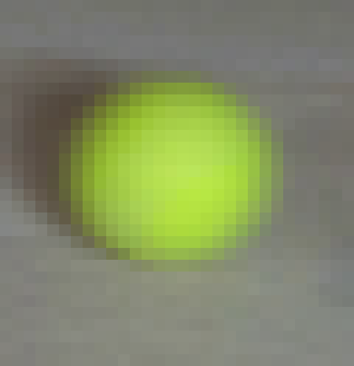
视觉工具实际返回图片 10
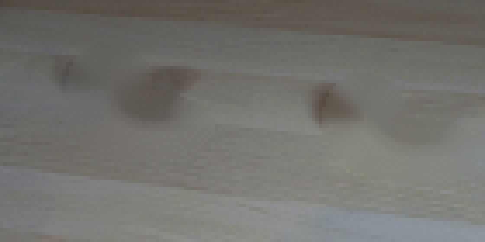
视觉工具实际返回图片 11
视觉工具实际返回图片 12
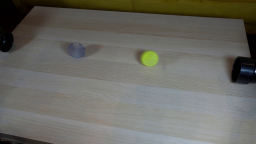
视觉工具实际返回图片 13
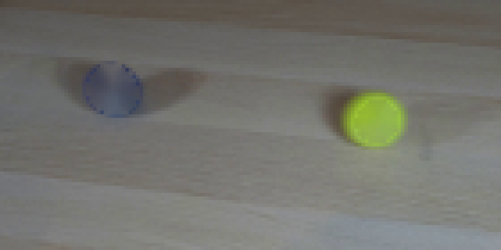
视觉工具实际返回图片 14
视觉工具实际返回图片 15
视觉工具实际返回图片 16
视觉工具实际返回图片 17
视觉工具实际返回图片 18
视觉工具实际返回图片 19
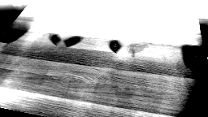
视觉工具实际返回图片 20
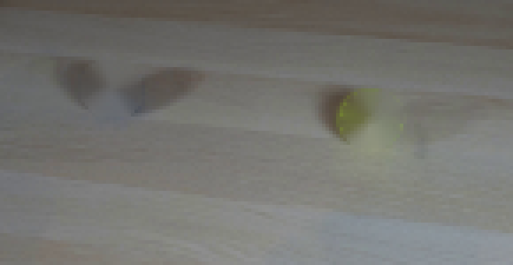
视觉工具实际返回图片 21
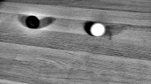
视觉工具实际返回图片 22
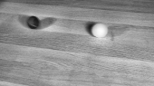
视觉工具实际返回图片 23
视觉工具实际返回图片 24
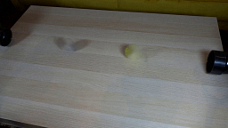
视觉工具实际返回图片 25
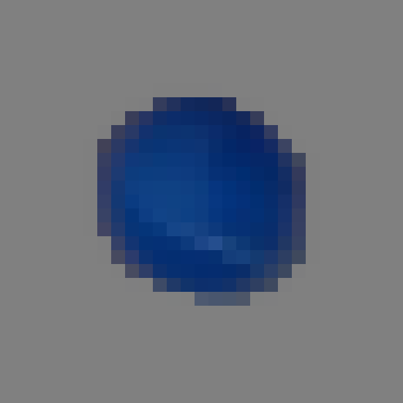
视觉工具实际返回图片 26
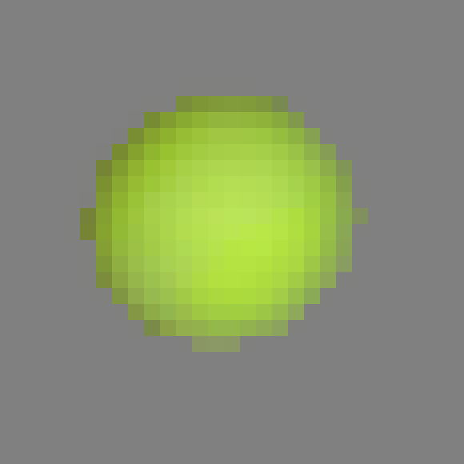
视觉工具实际返回图片 27
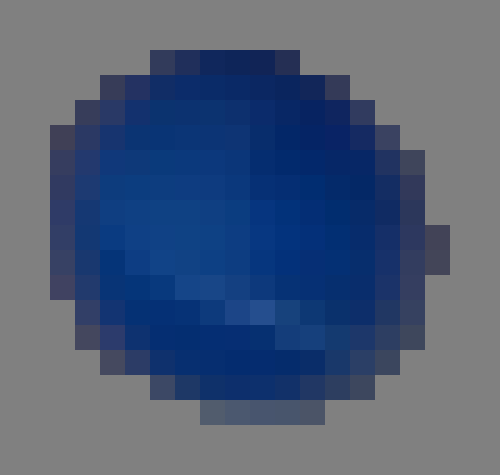
视觉工具实际返回图片 28
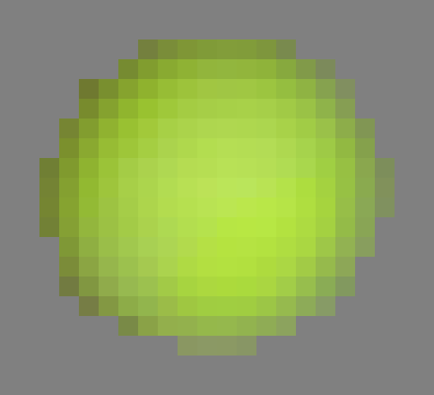
视觉工具实际返回图片 29
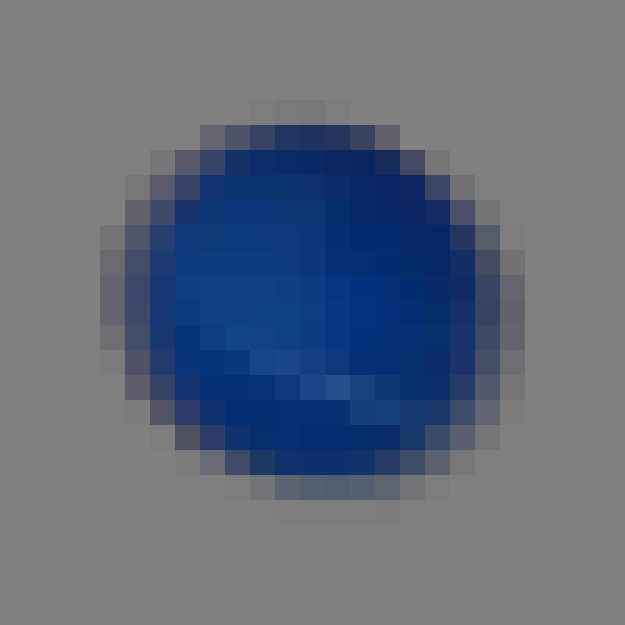
视觉工具实际返回图片 30
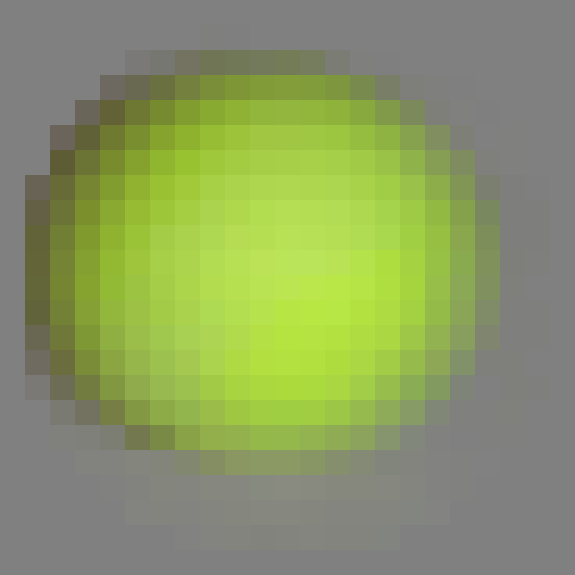
视觉工具实际返回图片 31
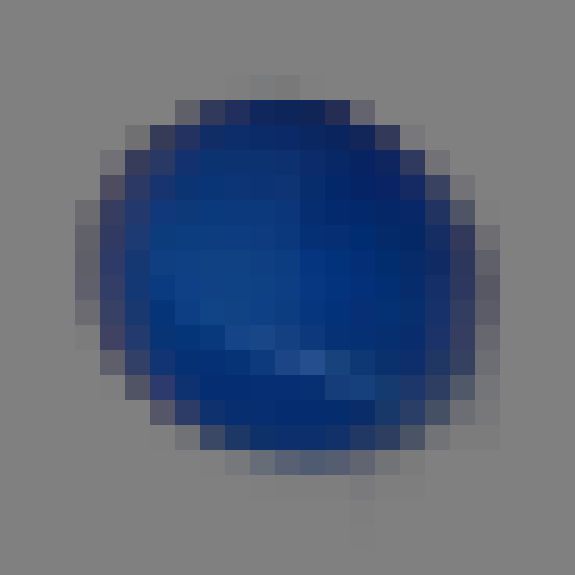
命令 61exit 0
/bin/bash -c "python - <<'PY'
import cv2, numpy as np
from PIL import Image
im=cv2.imread('first_frame.png')
mask=np.zeros(im.shape[:2],np.uint8)
cv2.ellipse(mask,(82,54),(22,15),10,0,360,255,-1)
cv2.ellipse(mask,(158,64),(23,15),8,0,360,255,-1)
# combine as two soft rounded areas but only table region
bg=cv2.inpaint(im,mask,4,cv2.INPAINT_TELEA)
# add source-like fine grain from clean neighboring highpass, not dark shadows
src=im.astype(np.float32)
hp=src-cv2.GaussianBlur(src,(0,0),1.0)
hp=cv2.GaussianBlur(hp,(0,0),0.45)
rng=np.random.default_rng(12)
noise=rng.normal(0,0.9,(144,256,1))
out=bg.astype(np.float32)+hp*0.10+noise
out=np.clip(out,0,255).astype(np.uint8)
cv2.imwrite('.tmp/bg_broad.png',out)
Image.open('.tmp/bg_broad.png').crop((40,25,200,100)).resize((1280,600),Image.Resampling.NEAREST).save('.tmp/bg_broad_zoom.png')
PY"命令 62exit 0
/bin/bash -c "python - <<'PY'
import numpy as np
from PIL import Image
im=np.array(Image.open('first_frame.png')).astype(float)
# gradient orientation and brightness around each shadow. Compare means above/below ball in a trapezoid.
for name,cx,cy in [('blue',76,50),('yellow',150,59)]:
print(name)
for x in range(cx-8,cx+20,4):
vals=[im[y,x].mean() for y in range(cy+7,cy+22)]
print(x, round(np.mean(vals),1), end='; ')
print()
PY"命令 63exit 0
/bin/bash -c "python - <<'PY'
import numpy as np
from PIL import Image
im=np.array(Image.open('first_frame.png')).astype(float)
# get diff from neighboring rows/cols to expose shadow: compare x positions at y 57-75 to right far
for name,cx,cy in [('blue',76,50),('yellow',150,59)]:
print(name)
for y in range(cy+5,cy+25,3):
print(y,[(x,round(im[y,x].mean(),1)) for x in range(cx-12,cx+25,5)])
PY"命令 64exit 0
/bin/bash -c "python - <<'PY'
import cv2, numpy as np
from PIL import Image
im=cv2.imread('first_frame.png').astype(np.float32)
# clean via horizontal interpolation across balls, then repair ball-shadow patches with vertical low-frequency texture-preserving blend
bg=cv2.inpaint(im.astype(np.uint8),np.zeros(im.shape[:2],np.uint8),0,cv2.INPAINT_TELEA).astype(np.float32)
# full plate: inpaint two broad ellipse masks
mask=np.zeros(im.shape[:2],np.uint8)
cv2.ellipse(mask,(82,54),(25,18),8,0,360,255,-1)
cv2.ellipse(mask,(158,64),(25,18),8,0,360,255,-1)
base=cv2.inpaint(im.astype(np.uint8),mask,4,cv2.INPAINT_TELEA).astype(np.float32)
# make shadow patches look natural by vertical linear interpolation from rows above/below using feather mask
out=base.copy()
for cx,cy in [(82,54),(158,64)]:
x1,x2=int(cx-30),int(cx+30); y1,y2=int(cy+7),int(cy+24)
top=base[y1-3:y1,x1:x2].mean(0); bot=base[y2:y2+3,x1:x2].mean(0)
for y in range(y1,y2):
t=(y-y1+1)/(y2-y1+1)
target=top*(1-t)+bot*t
w=np.clip(np.minimum((y-y1+1)/3,(y2-y)/3),0,1)
out[y,x1:x2]=out[y,x1:x2]*(1-w*0.75)+target*w*0.75
# add fine grain
rng=np.random.default_rng(5); noise=rng.normal(0,1.1,(144,256,1)); out+=noise
out=np.clip(out,0,255).astype(np.uint8)
cv2.imwrite('.tmp/bg_final_candidate.png',out)
PY"命令 65exit 0
/bin/bash -c "python - <<'PY'
import numpy as np
from PIL import Image
# Check alpha and colors at exact source ball. use contrast mask only.
im=np.array(Image.open('first_frame.png')).astype(float)
for name,cx,cy in [('blue',76,50),('yellow',150,59)]:
print(name)
for y in range(cy-9,cy+10,2):
print(' '.join(f'{int(im[y,x].mean()):3d}' for x in range(cx-9,cx+10,2)))
PY"命令 66exit 0
/bin/bash -c "python - <<'PY'
from PIL import Image
im=Image.open('first_frame.png')
# strong unsharp visualization
from PIL import ImageFilter
im.crop((55,35,95,75)).resize((800,800),Image.Resampling.NEAREST).filter(ImageFilter.UnsharpMask(radius=1,percent=200,threshold=2)).save('.tmp/blue_sharp.png')
PY"命令 67exit 0
/bin/bash -c "python - <<'PY'
import numpy as np
from PIL import Image
im=np.array(Image.open('first_frame.png')).astype(float)
# ellipse distance boundaries from threshold visualization
for name,cx,cy in [('blue',76,50),('yellow',150,59)]:
yy,xx=np.indices(im.shape[:2]); R,G,B=im[:,:,0],im[:,:,1],im[:,:,2]
chrom=(B-np.maximum(R,G)) if name=='blue' else ((R+G)/2-B)
print(name)
for ang in range(0,360,30):
a=np.radians(ang); found=[]
for r in np.arange(3,13,.1):
x=int(round(cx+r*np.cos(a))); y=int(round(cy+r*np.sin(a)))
if chrom[y,x]>15: found.append(r)
print(ang, max(found) if found else None, end='; ')
print()
PY"命令 68exit 0
/bin/bash -c "python - <<'PY'
import numpy as np
from PIL import Image
im=np.array(Image.open('first_frame.png')).astype(float)
for name,cx,cy in [('blue',76,50),('yellow',150,59)]:
print(name)
for y in range(cy-10,cy+11):
s=''
for x in range(cx-12,cx+13):
r,g,b=im[y,x]; v=(b-max(r,g)) if name=='blue' else ((r+g)/2-b)
if v>50:s+='#'
elif v>25:s+='O'
elif v>10:s+='+'
elif v>3:s+='.'
else:s+=' '
print(f'{y:3d} {s}')
PY"命令 69exit 0
/bin/bash -c "python - <<'PY'
import numpy as np
from PIL import Image
im=np.array(Image.open('first_frame.png')).astype(float)
for y in range(43,58):
vals=[]
for x in range(68,86):
r,g,b=im[y,x]
vals.append(int(b-max(r,g)))
print(y,' '.join(f'{v:2d}' for v in vals))
PY"命令 70exit 0
/bin/bash -c 'python generate.py'
命令 71exit 0
/bin/bash -c "python - <<'PY'
from PIL import Image
for i in [1,4,8,10,12,14,19]:
Image.open(f'frames/{i:02d}.png').resize((1024,576),Image.Resampling.NEAREST).save(f'.tmp/frame_{i:02d}_zoom.png')
PY"命令 72exit 0
/bin/bash -c "python - <<'PY'
import numpy as np
from PIL import Image
s=np.array(Image.open('first_frame.png')); g=np.array(Image.open('frames/01.png'))
d=np.abs(s.astype(int)-g.astype(int)).mean(2)
print('changed >5:',(d>5).sum(),'bbox',np.where(d>5)[1].min(),np.where(d>5)[0].min(),np.where(d>5)[1].max(),np.where(d>5)[0].max())
print('frame00 equal',np.array_equal(s,np.array(Image.open('frames/00.png'))))
# positions from generated sprite by color
for i in [1,2,4,6,8,10,11,12,14,16,19]:
a=np.array(Image.open(f'frames/{i:02d}.png')).astype(float); r,g,b=a[:,:,0],a[:,:,1],a[:,:,2]
bm=(b-g>30)&(b-r>40); ym=(r-b>70)&(g-b>80)
def cen(m):
y,x=np.where(m); return (round(x.mean(),1),round(y.mean(),1)) if len(x) else None
print(i,cen(bm),cen(ym))
PY"命令 73exit 0
/bin/bash -c "python - <<'PY'
import numpy as np
from PIL import Image
im=np.array(Image.open('first_frame.png')).astype(float)
# ball visual patch at source to inspect colors
Image.fromarray(np.array(Image.open('first_frame.png'))[36:74,60:96]).resize((720,760),Image.Resampling.NEAREST).save('.tmp/source_blue_exact.png')
Image.fromarray(np.array(Image.open('frames/01.png'))[36:74,74:110]).resize((720,760),Image.Resampling.NEAREST).save('.tmp/generated_blue_exact.png')
PY"命令 74exit 0
/bin/bash -c "python - <<'PY'
import numpy as np
from PIL import Image
for fn,box in [('first_frame.png',(60,36,96,74)),('frames/01.png',(74,36,110,74))]:
a=np.array(Image.open(fn)).astype(float)[box[1]:box[3],box[0]:box[2]]
r,g,b=a[:,:,0],a[:,:,1],a[:,:,2]; m=(b-np.maximum(r,g)>25)
p=a[m];print(fn,len(p),p.mean(0),np.quantile(p,[.1,.5,.9],axis=0))
PY"命令 75exit 0
/bin/bash -c "python - <<'PY'
import numpy as np
from PIL import Image
for fn,box in [('first_frame.png',(60,36,96,74)),('frames/01.png',(74,36,110,74))]:
a=np.array(Image.open(fn)).astype(float)[box[1]:box[3],box[0]:box[2]]
r,g,b=a[:,:,0],a[:,:,1],a[:,:,2]; m=(b-np.maximum(r,g)>25)
p=a[m];print(fn)
for rad in range(0,10):
# not center known; print extreme colors
pass
print('min',p.min(0),'max',p.max(0))
PY"命令 76exit 0
/bin/bash -c "python - <<'PY'
import numpy as np
from PIL import Image
im=np.array(Image.open('first_frame.png')).astype(float)
# print angular radial profiles averaged in annuli for colors
for name,cx,cy,kind in [('blue',76,50,'b'),('yellow',150,59,'y')]:
print(name)
for y in range(cy-8,cy+9,2):
row=[]
for x in range(cx-8,cx+9,2):
R,G,B=im[y,x]; row.append('%3d/%3d/%3d'%(R,G,B))
print(y,' '.join(row))
PY"命令 77exit 0
/bin/bash -c "python - <<'PY'
import numpy as np
from PIL import Image
for fn,box in [('first_frame.png',(60,36,96,74)),('frames/01.png',(74,36,110,74))]:
a=np.array(Image.open(fn)).astype(float)[box[1]:box[3],box[0]:box[2]]
# print pixels that exceed thresholds to see where weird white occurs
r,g,b=a[:,:,0],a[:,:,1],a[:,:,2]; m=(r>100)&(g>100)&(b>150)
print(fn,m.sum())
PY"命令 78exit 0
/bin/bash -c "python generate.py && python - <<'PY'
from PIL import Image
for i in [1,4,10,12,19]:
Image.open(f'frames/{i:02d}.png').resize((1024,576),Image.Resampling.NEAREST).save(f'.tmp/pass2_{i:02d}.png')
PY"命令 79exit 0
/bin/bash -c "python - <<'PY'
import numpy as np
from PIL import Image
for fn,box in [('first_frame.png',(60,36,96,74)),('frames/01.png',(74,36,110,74))]:
a=np.array(Image.open(fn)).astype(float)[box[1]:box[3],box[0]:box[2]]
r,g,b=a[:,:,0],a[:,:,1],a[:,:,2]; m=(b-np.maximum(r,g)>25)
p=a[m];print(fn,len(p),p.mean(0),np.quantile(p,[.1,.5,.9],axis=0),'max',p.max(0))
PY"命令 80exit 0
/bin/bash -c "python - <<'PY'
import numpy as np
from PIL import Image
im=np.array(Image.open('frames/01.png')).astype(int)
# pixels high in all channels
for y in range(36,74):
for x in range(74,110):
r,g,b=im[y,x]
if r>80 and g>80 and b>140: print(x,y,(r,g,b))
PY"命令 81exit 0
/bin/bash -c "python - <<'PY'
import numpy as np
from PIL import Image
im=np.array(Image.open('first_frame.png')).astype(float)
for name,cx,cy,kind in [('blue',76,50,'b'),('yellow',150,59,'y')]:
print(name)
for ang in range(0,360,45):
a=np.radians(ang)
pts=[]
for rad in [2,4,6,7,8]:
x=int(round(cx+rad*np.cos(a))); y=int(round(cy+rad*np.sin(a))); pts.append(tuple(im[y,x].astype(int)))
print(ang,pts)
PY"命令 82exit 1
/bin/bash -c "python - <<'PY'
import numpy as np
from PIL import Image
# identify extreme generated white pixel locations and underlying alpha/color
from generate import sphere_sprite
sp,ex=sphere_sprite('blue',0)
for y,x in [(44,94),(46,88),(67,85)]:
py=y-(50-ex); px=x-(91-ex)
print((x,y),'local',(px,py),sp[py,px])
PY"命令 83exit 0
/bin/bash -c "python - <<'PY'
import numpy as np
from PIL import Image
from generate import sphere_sprite
sp,ex=sphere_sprite('blue',0)
print(sp.shape,ex)
im=np.array(Image.open('frames/01.png')).astype(int)
# sample only ball crop around center 92,51
for y in range(43,60):
row=[]
for x in range(84,101):
px=x-(92-ex); py=y-(51-ex)
if 0<=py<sp.shape[0] and 0<=px<sp.shape[1] and sp[py,px,3]>0:
row.append(tuple(sp[py,px]))
print(y,row[:3],row[-3:])
PY"命令 84exit 0
/bin/bash -c "python - <<'PY'
import numpy as np
from PIL import Image
for i in [1,4,8,10,12,14,19]:
a=np.array(Image.open(f'frames/{i:02d}.png')).astype(float); r,g,b=a[:,:,0],a[:,:,1],a[:,:,2]
for name,m in [('b',(b-np.maximum(r,g)>25)),('y',(r-b>70)&(g-b>80))]:
y,x=np.where(m); print(i,name,len(x),(x.min(),y.min(),x.max(),y.max()) if len(x) else None)
PY"命令 85exit 0
/bin/bash -c "python - <<'PY'
import numpy as np
from PIL import Image
a=np.array(Image.open('frames/01.png')).astype(int)
# Count blue mask in image excluding pipes; inspect at specific x
m=(a[:,:,2]-np.maximum(a[:,:,0],a[:,:,1])>25)
y,x=np.where(m)
# components
import cv2
n,l,s,c=cv2.connectedComponentsWithStats(m.astype(np.uint8))
print(s.tolist())
PY"命令 86exit 0
/bin/bash -c "python - <<'PY'
import numpy as np
from PIL import Image
from generate import sphere_sprite
for k in ['blue','yellow']:
sp,ex=sphere_sprite(k,0)
print(k,sp.shape,ex)
for y in range(sp.shape[0]):
print(' '.join(f'{sp[y,x,3]:3d}' for x in range(sp.shape[1])))
break
PY"命令 87exit 0
/bin/bash -c "python - <<'PY'
import numpy as np
from PIL import Image
a=np.array(Image.open('frames/01.png')).astype(int)
for p in [(92,44),(94,45),(89,47),(83,67)]:
x,y=p;print(p,a[y,x])
PY"命令 88exit 0
/bin/bash -c "python - <<'PY'
from PIL import Image
import numpy as np
src=np.array(Image.open('first_frame.png')); gen=np.array(Image.open('frames/01.png'))
# direct side by side crops with background
out=np.zeros((100,300,3),np.uint8);out[:]=128
out[10:54,10:64]=src[30:74,50:104]
out[10:54,100:154]=gen[30:74,66:120]
Image.fromarray(out).resize((1200,400),Image.Resampling.NEAREST).save('.tmp/compare_blue.png')
PY"命令 89exit 0
/bin/bash -c "python - <<'PY'
import numpy as np
from PIL import Image
src=np.array(Image.open('first_frame.png')); gen=np.array(Image.open('frames/01.png'))
out=np.zeros((110,400,3),np.uint8);out[:]=128
out[10:75,10:65]=src[30:95,50:105]
out[10:75,210:265]=gen[30:95,66:121]
Image.fromarray(out).resize((1200,330),Image.Resampling.NEAREST).save('.tmp/compare_blue2.png')
PY"命令 90exit 0
/bin/bash -c "python - <<'PY'
from PIL import Image
import numpy as np
im=Image.open('first_frame.png'); im.crop((62,37,92,64)).resize((900,810),Image.Resampling.NEAREST).save('.tmp/source_blue_tight.png')
im2=Image.open('frames/01.png');im2.crop((78,38,108,65)).resize((900,810),Image.Resampling.NEAREST).save('.tmp/gen_blue_tight.png')
PY"命令 91exit 0
/bin/bash -c "python - <<'PY'
import numpy as np
from PIL import Image
from generate import sphere_sprite
sp,ex=sphere_sprite('blue',0)
for y in [10,12,13,14,16]:
print(y,[(x,tuple(sp[y,x])) for x in [10,11,12,13,14,15,16] if sp[y,x,3]])
PY"命令 92exit 0
/bin/bash -c "python - <<'PY'
import numpy as np
from PIL import Image
from generate import sphere_sprite
sp,ex=sphere_sprite('blue',0)
print('at center',sp[13,13])
PY"命令 93exit 0
/bin/bash -c "python - <<'PY'
import numpy as np
from PIL import Image
from generate import sphere_sprite, clean_plate, add_sprite
src=np.array(Image.open('first_frame.png')); plate=clean_plate(src); fr=plate.copy();sp,ex=sphere_sprite('blue',0);add_sprite(fr,sp,ex,np.array([92.,51.]))
Image.fromarray(fr[35:75,70:115]).resize((900,800),Image.Resampling.NEAREST).save('.tmp/direct_sprite_check.png')
print(fr[44,92],fr[51,92],fr[57,92])
PY"命令 94exit 0
/bin/bash -c "python - <<'PY'
import numpy as np
from PIL import Image
from generate import clean_plate
src=np.array(Image.open('first_frame.png')); p=clean_plate(src)
for y in range(40,60,2): print(y,[tuple(p[y,x]) for x in range(88,97)])
PY"命令 95exit 0
/bin/bash -c "python - <<'PY'
import cv2, numpy as np
from PIL import Image
from generate import clean_plate
src=np.array(Image.open('first_frame.png'));p=clean_plate(src)
# inspect inpainting region colors at rows where ball isn't near
print(p[42,80],p[44,80],p[50,85],p[60,85],p[70,85])
# save clean crop
Image.fromarray(p[35:95,60:190]).resize((1040,480),Image.Resampling.NEAREST).save('.tmp/plate_artifacts.png')
PY"命令 96exit 0
/bin/bash -c "python generate.py && python - <<'PY'
from PIL import Image
for i in [1,4,8,10,12,16,19]:
Image.open(f'frames/{i:02d}.png').resize((1024,576),Image.Resampling.NEAREST).save(f'.tmp/pass3_{i:02d}.png')
PY"命令 97exit 0
/bin/bash -c "python - <<'PY'
from PIL import Image
import numpy as np
for i in [0,1,4,8,10,12,16,19]:
a=np.array(Image.open(f'frames/{i:02d}.png'))
print(i,'mean',a.mean((0,1)).round(2),'std',a.std((0,1)).round(2))
PY"命令 98exit 0
/bin/bash -c "python - <<'PY'
import numpy as np, cv2
from PIL import Image
for i in [1,4,8,10,12,16,19]:
a=np.array(Image.open(f'frames/{i:02d}.png')).astype(float); r,g,b=a[:,:,0],a[:,:,1],a[:,:,2]
for name,m in [('b',(b-g>25)&(b-r>35)),('y',(r-b>70)&(g-b>80))]:
m=m.astype(np.uint8); n,l,s,c=cv2.connectedComponentsWithStats(m)
comps=[]
for j in range(1,n):
if s[j,4]>20: comps.append((s[j,4],tuple(s[j,:4]),tuple(c[j].round(1))))
print(i,name,sorted(comps,reverse=True)[:3])
PY"命令 99exit 0
/bin/bash -c "python - <<'PY'
import numpy as np
from PIL import Image
src=np.array(Image.open('first_frame.png')); out=np.array(Image.open('frames/19.png'))
# difference from frame0 only on central area
d=np.abs(src.astype(int)-out.astype(int)).mean(2)
ys,xs=np.where(d>8)
print('diff bbox',xs.min(),ys.min(),xs.max(),ys.max(),'n',len(xs))
PY"命令 100exit 0
/bin/bash -c "python - <<'PY'
import numpy as np, cv2
from PIL import Image
src=np.array(Image.open('first_frame.png')); out=np.array(Image.open('frames/19.png'))
d=np.abs(src.astype(int)-out.astype(int)).mean(2)
m=(d>8).astype(np.uint8)
n,l,s,c=cv2.connectedComponentsWithStats(m)
print([(int(x[4]),tuple(map(int,x[:4]))) for x in s[1:] if x[4]>5])
# save diff map
Image.fromarray(np.clip(d*8,0,255).astype(np.uint8)).save('.tmp/diff19.png')
PY"命令 101exit 1
/bin/bash -c 'command -v ffmpeg'
命令 102exit 0
/bin/bash -c "python - <<'PY'
import json, base64
import numpy as np
from PIL import Image
from pathlib import Path
p=Path('.')
frames=sorted((p/'frames').glob('*.png'))
first=np.array(Image.open('first_frame.png').convert('RGB'))
f0=np.array(Image.open(frames[0]).convert('RGB'))
all_ok=True
for i,f in enumerate(frames):
a=np.array(Image.open(f))
all_ok &= a.shape==(144,256,3) and a.dtype==np.uint8
print('frames',len(frames),'all_shape_ok',all_ok,'frame00_exact',np.array_equal(first,f0))
with np.load('pixels.npz') as z: print('pixels',z['pixels'].shape,z['pixels'].dtype)
print('index_bytes',(p/'index.html').stat().st_size,'inspection_bytes',(p/'inspection.png').stat().st_size)
PY"命令 103exit 0
/bin/bash -c 'git status --short 2>/dev/null || true'
命令 104exit 0
/bin/bash -c "python - <<'PY'
from PIL import Image
for i in [8,9,10,11,12]:
Image.open(f'frames/{i:02d}.png').crop((75,35,145,85)).resize((840,600),Image.Resampling.NEAREST).save(f'.tmp/contact_{i:02d}.png')
PY"保存候选 5 份；完成命令 104 次；可验证图片返回 31 张。原始 API 响应与完整日志保留在本地。